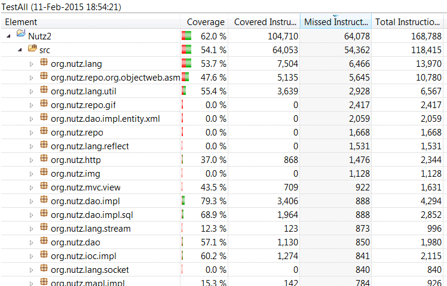

起码 Java 是一门优美的编程语言，经过10多年的发展，它几乎已经被应用到了任何地方，在高端的企业服务器上，手持设备的芯片里，车载设备，智能家电甚至火星车上。在功能上，它广泛的涉足到了软件应用的各个领域，现在，它开始向桌面和图像处理方面频频发力。 从历史上看它是一门成熟的语言，从现在来看，它是世界上使用最广泛的语言，从将来看，它是最有前途的语言（现在它依然充满了活力和创新）。
但是，在越来越流行的 Web 开发领域， Java 似乎逐渐露出了疲态。是的，脚本语言们卷起了一场热潮，似乎已经快可以用“革命”两个字来形容了。而Java，被“脚本小子们”诟病最多的便是 低下的开发效率。
但是，真的是这样的吗？
从本质上来说， Java 语言本身为程序员提供的帮助只有两点，一是语言的语法，二是内置的类库。 现在从事 Web 开发，大多是采用第三方的类库（或者说是框架），比如流行的 SSH。 所谓 Java 在Web 开发的低效，不妨这样说比较贴切一些: 采用第三方类库进行开发比较低效。
为了证明这一点，我写作了 Nutz， 它是一组轻便小型的框架的集合， 各个部分可以被独立使用。 而 Nutz 的目标就是
在力所能及的情况下，最大限度的提高Web开发人员的生产力。
是的，提高生产力是这个框架唯一的目标。 就像 Java 设计之初，考虑最多的是程序员的易用性和运行时效率的权衡， Nutz 也是这样。希望通过 Nutz， Java 的开发人员可以获得更快的开发速度，更少的代码量，并且这些以不损害运行时效率为前提。
它所有的功能均不依赖第三方 jar 包
这就意味着：
截至到现在为止，Nutz 的 JUnit 用例覆盖率大概是这样的

并且这个数字还在不断增加。
在一个功能告一段落以后，我通常会花1－2个晚上在一边咂着廉价的红酒一边颇有成就感的书写JUnit测试。通常我会用 JUnit 把我自己击溃，紧接着的那几天我都努力让那个该死红条变绿，之后，又想方设法写出新的Junit测试试图让它再度变红。并且我还要保证所做的修改不能让代码膨胀，这的确让我死掉了不少脑细胞。这些测试中，不仅涵盖各种功能上的测试，也涵盖了一些跨越线程的测试。在以后，我会针对代码执行的效率加入一些新的测试。
我能保证的就是Nutz的代码是小巧的，以及通过尽可能多的 JUnit 测试。但是所有我能做的也就只是这些了，找出剩下的那些代码上的缺陷，就应该交给 Nutz 第一批“小白”们了。“小白”们，加油！我支持你们...
小白： 是小白鼠的简称。小白鼠是实验室的最爱，实验室是产生新东西的地方。
Nutz 是一个新兴的开源项目
它没有过去，只有未来
我可以保证，在未来，Nutz 的代码 绝对不会膨胀。 所有的功能设计的出发点就是最大限度给予程序员实惠。
考虑到，现在这个特殊时期，讨论区 即使用 https 也会不时被墙。所以你还可以给项目成员直接发信